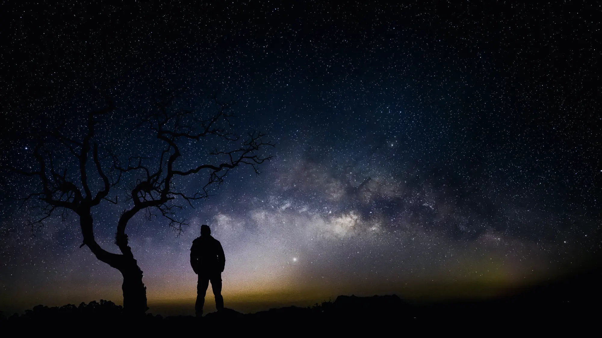
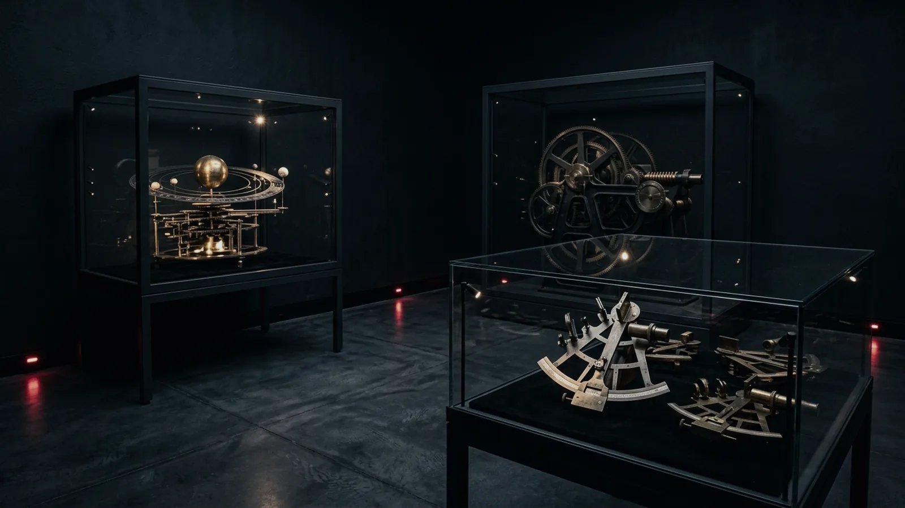
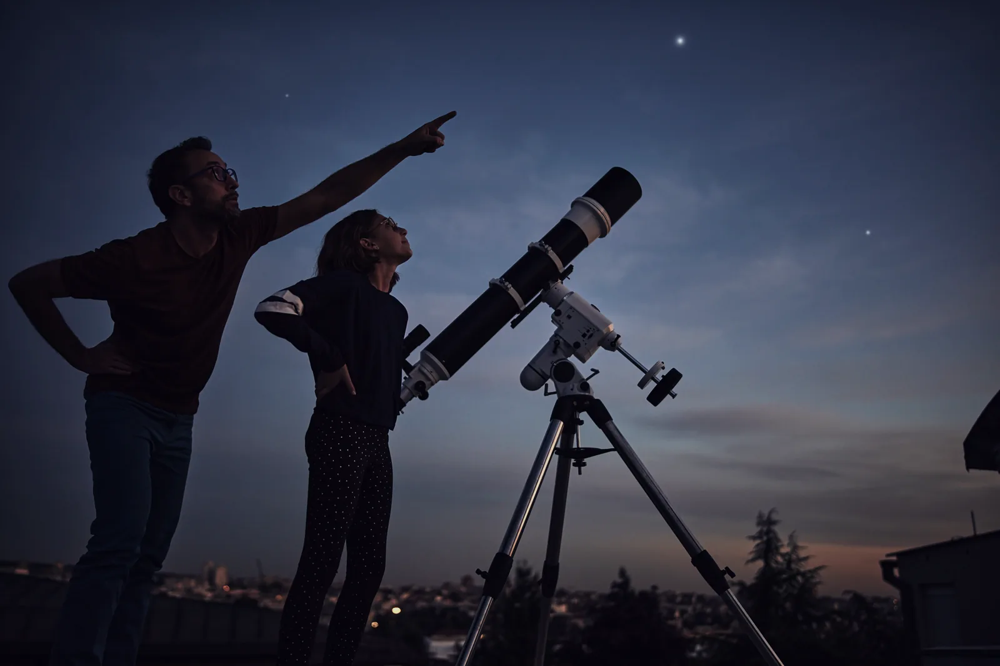
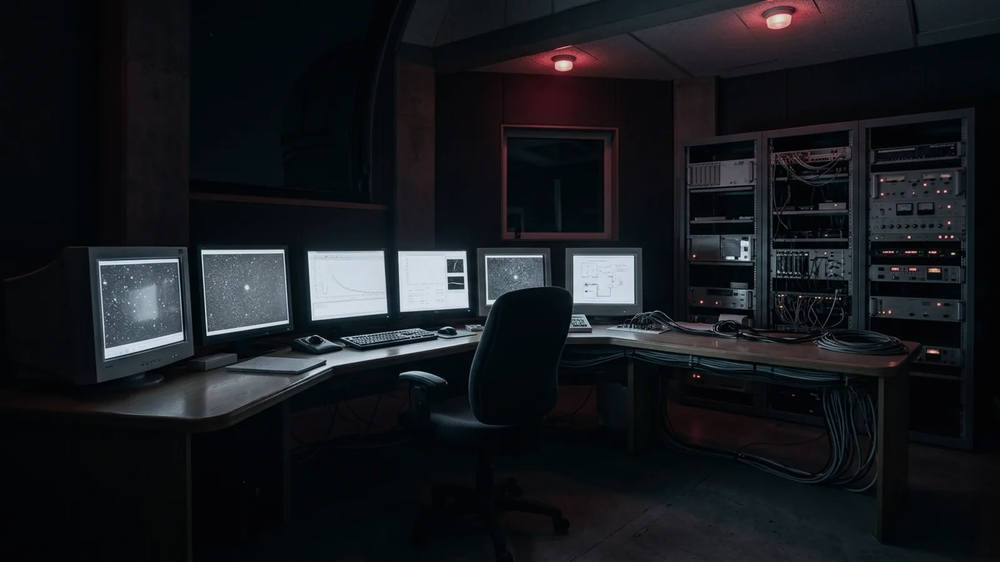

Hallow Fell · 54.4832° N · 612 m
Where the sky still gets properly dark
VELA is a working observatory and a public sky centre on the Cumbrian fells, forty minutes from the nearest street light. The 1.2-metre telescope runs most clear nights of the year, and on three of them a week you can book a place at the eyepiece.
- Sunset
- —
- Astronomical dark
- —
- Hours of true dark
- —
- Moon
- —
- Brightest up now
- —
Computed for this location from your device clock.
An observatory that lets people in
Most research telescopes are closed to the public and most public telescopes are not used for research. VELA is both. The instruments that run our survey programme on a Tuesday are the ones you look through on a Friday, and the person showing you Saturn is the person who took the data.
What is over the fell right now
This map is drawn from a catalogue of 223 stars and the positions of the Sun, Moon and planets, computed for our latitude and your clock. The band across it is the real galactic plane. Drag a finger or point at anything to identify it.
North at top, east at left · the rim is the horizon
Up now, brightest first
| Object | Direction | Altitude | Mag |
|---|---|---|---|
| Reading the sky… | |||
The next few days
Dome shows run every day except Tuesday. Telescope nights are offered only on dates the sky actually reaches astronomical darkness, which is why they disappear from this list between May and August.
Loading the programme…
Eighty-five nights a year, this place cannot go dark
At 54.4832° north the Sun does not fall the full eighteen degrees below the horizon between 10 May and 2 August. There is no astronomical darkness at all in those weeks — not late, not briefly. It simply does not happen.
So we do not pretend otherwise. The deep-sky season runs from August to April, and the light months go to the Sun instead: hydrogen-alpha on the terrace, prominences, sunspot counts for the century-long record the observatory has kept since 1963.
On the longest night in December there are twelve hours and fifteen minutes of true dark. On 8 May there are fifty-six minutes.

Four buildings and a hill
The centre is small on purpose. You can see all of it in an afternoon and still have time to sit in the dome.

Exhibitions
Four rooms of instruments, plates and the machinery of measurement, including the 1908 refractor still in its original dome.
Galleries
Learning
Half-day and full-day programmes for key stages 2 to 5, teacher resources, and Saturday mornings for young astronomers.
Learning
Research
What the telescope is actually pointed at — the variable-star programme, the plate archive, and the sky-brightness record.
ResearchCome back as often as you like
Membership is the only sensible way to visit an observatory, because the one thing nobody can promise you is a clear night.
Members are admitted free for a year, take a quarter off every dome show and telescope night, and book two weeks before general release — which matters, because the 1.2-metre only seats twenty-four.